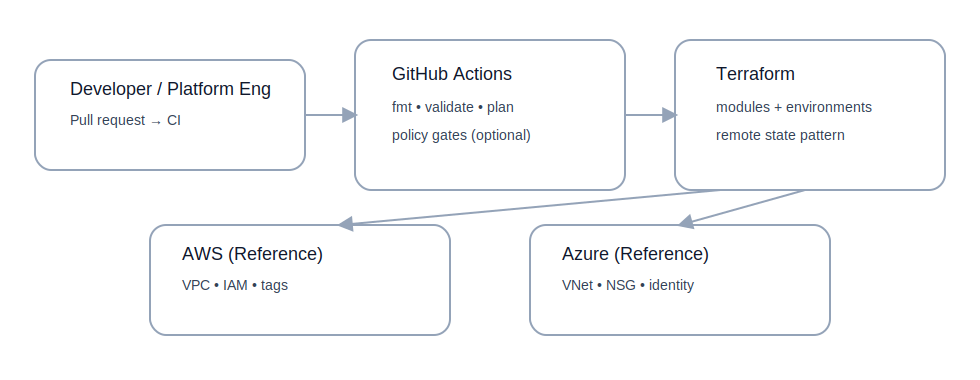

Jeremiah Cargill
Senior Infrastructure & Platform Engineer
Home
Projects
Resume
About
Contact
Light mode
Terraform Multi-Cloud Platform
Repository →
Architecture (sanitized)

Key Patterns
Reusable module boundaries (network/identity/compute/observability)
Multi-environment composition (dev/stage/prod)
CI-ready workflow (fmt/validate/plan)
Security-first defaults and tagging/naming standards
What this demonstrates
Platform engineering approach to Infrastructure as Code
Consistency and drift control via modularization
Enterprise-friendly repo structure and documentation
Cloud-agnostic thinking across AWS and Azure
Recommended next enhancements
Add policy-as-code gate (OPA/Conftest) for baseline controls
Add remote state backend examples (documented)
Add drift detection workflow (reference)